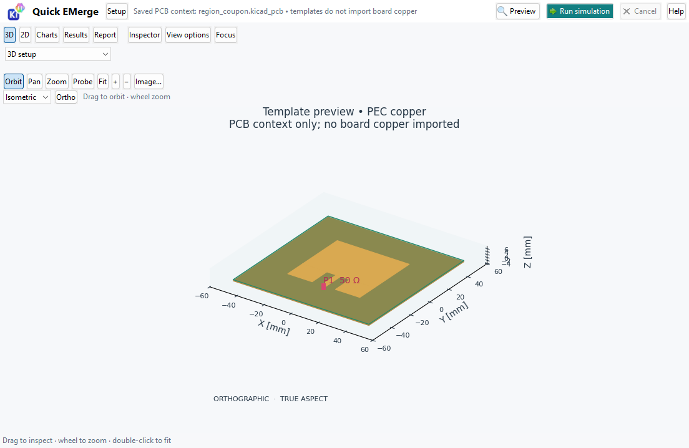
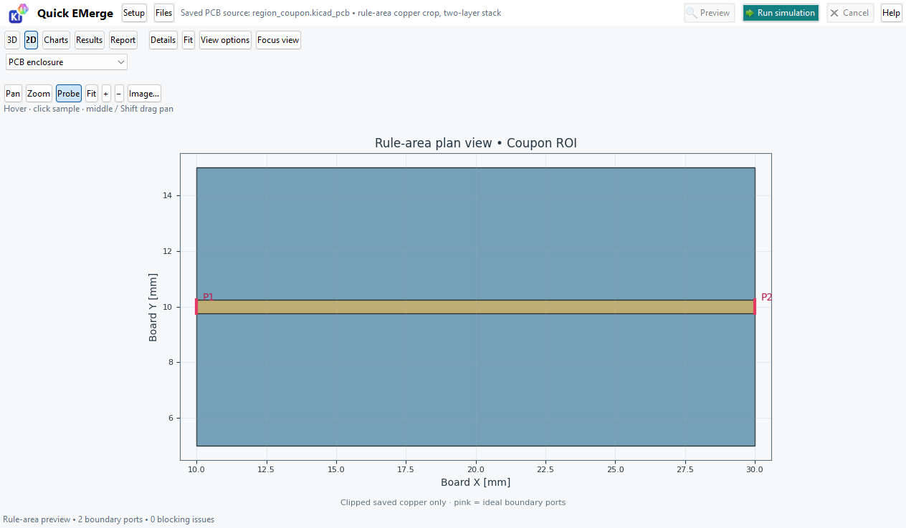

The viewport fills the workspace by default. Select Setup in the top bar to show Geometry, Physics and Solve settings; select it again to hide them. The top-bar Files menu saves or loads setups and results. Preview, Run simulation, Cancel and Help stay visible, with progress and errors in the status bar. Hiding settings preserves the study and reviewed geometry.
The optional Details inspector starts below the view at no more than 30% height. Focus view hides panels temporarily and restores their previous visibility. The setup sash preserves usable workspace width; 3D plots use more of the canvas while retaining unit labels, true-aspect indication and template/model limitations.

Windows source-window capture, 2026-10-29, Python 3.14 / wxPython 4.2.5 / Matplotlib software rendering. Repository fixture and default patch template; no solver execution, private data, personal paths or redactions. This capture predates the Files button.
Setup → Preview geometry and ports → Run simulation is the main workflow. Fit frames the active geometry or plot. Switch among 3D, 2D, Charts, Results and Report afterward; Files remains available with Setup closed.

Windows source capture, 2026-10-30, Python 3.14 / wxPython 4.2.5, Matplotlib software rendering and KiCad 10.0.6 extraction. Repository region_coupon clipped saved copper and two planned ideal boundary ports; no FEM solve. Source unchanged; no private data, personal paths or redactions. Plot canvas 1264 × 549 in a 1280 × 800 window.
Files → Save setup… opens a file chooser in the saved PCB's project folder. Choose a location and name; a missing .json extension is added. Load setup restores geometry, physics, material, mesh, sweep and solver controls. Preview is required again before Run. A changed board asks for confirmation, and region setups must still match a real rule area and signal/reference nets. Missing choices are reported rather than silently replaced. Original schema-1 setups remain readable.
Save results… stores original computed arrays and source evidence in a chosen JSON file. Load results… opens the saved values in the read-only simulation viewer without rerunning the solver. Changed or moved source boards are labelled as historical evidence. Setup and result files are different; use the corresponding command. Cancelling a chooser leaves the current setup untouched.
Open this offline guide with Help or F1 in the workbench. Use the contents to jump to a task.
Quick EMerge is a read-only testing beta for exploratory electromagnetic studies. It reads a saved PCB; it does not write the board or project. Unsaved PCB Editor changes are excluded. Numerical convergence and physical accuracy are not established by a successful run.
The area outline crops the full two-layer column, regardless of its KiCad keepout permissions. Concavity and holes are retained. Copper crossing the crop can form an ideal boundary port where reference copper covers the full port span; a natural board edge does not create a port. Review the numbered ports in Preview. The region workflow supports 1–8 ideal ports and blocks unsupported geometry, including internal drilled features, unfilled zones, unselected cut conductors and incomplete returns. It does not import a general multilayer board, via barrels, components or interior feeds. The separate via template does not change these limits.
New studies start with 81 frequency samples, an 81 × 81 field grid, and 2° radiation angles (91 × 181). Existing saved setups keep their frequency and field-grid settings. Under 3 Solve → Output sampling, Use dense sampling selects 81 linear FEM frequencies and an 81 × 81 field grid without changing mesh settings. A 2.4–2.6 GHz linear sweep then has 2.5 MHz spacing; a smaller span gives finer frequency spacing. More frequency solves take longer.
The frequency sweep determines the frequencies evaluated for the network response. The FEM mesh discretizes the model for the solve: refining it affects cost and may affect accuracy. Field grids and radiation angular samples are post-processing samples of the computed fields, not extra FEM solves and not the FEM mesh. Increasing display samples does not prove mesh convergence. Fields remain tied to their recorded frequency and excitation; clicking another chart frequency does not recompute them.
The 2° radiation grid applies to driven antenna and array results. Scattering studies retain a 6° bistatic RCS grid (31 × 61). Local mesh refinement runs the requested fixed number of passes; it does not automatically qualify the full response. The adaptive AAA response tolerance controls frequency sampling, not mesh-convergence acceptance.
Use 3D, 2D, Charts, Results and Report. Orbit, Pan, Zoom and Probe select viewport interaction; Fit restores the view. View options control visibility, projection, color scale and display aspect without changing solver geometry. Probe selects original samples and links views. The Inspector offers pinned samples, extrema and CSV export; a line cut uses nearest original samples and is not continuous interpolation. Radiation radius is normalized relative field magnitude, not gain or physical distance.
Charts show available network results. Report offers Generate preview, Export HTML and Export PDF; PDF requires ReportLab. Reports include assumptions, source checks, selected probes and limitations. New results replace previous report state. Source or configuration changes can reject stale exports.
First-open managed setup needs internet, Python 3.10–3.13 and 3 GiB free. Desktop dependencies include a complete wxPython/Matplotlib, VTK and ReportLab environment. EMerge runs in a separate managed environment. Candidate updates pass dependency and compatibility checks before activation; a failed update retains the working runtime. Run settings provide setup/retry and restore-previous-runtime controls. Existing working packages are not upgraded in place.
Earlier beta layout (paths redacted):
For supported studies, limits and dated evidence see the user guide, capability inventory and validation evidence.